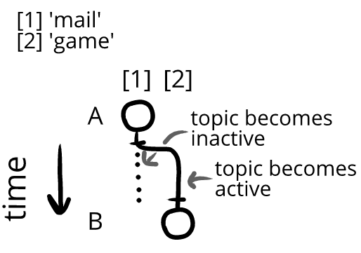
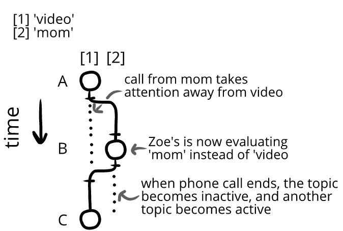
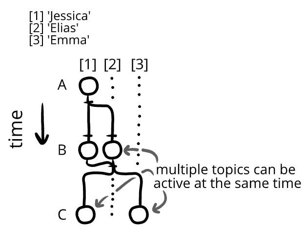
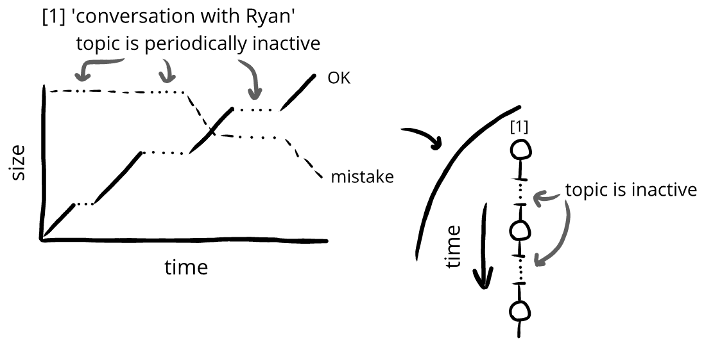

Topics alternate between being active and inactive
We're not evaluating everything all the time. Instead, we evaluate a few things for a while, and then switch to evaluate other things.
For instance:
We don’t hear a joke and then spend the rest of our lives continuously evaluating it. Instead, we evaluate the joke for a while and then our attention goes to something else.
When we're paying attention to a topic, we're evaluating it. When we're evaluating a topic, it's active—otherwise, that topic is inactive:
We cycle through active topics as our attention changes:
A. Trevor's ears prick as he hears the mail being delivered. It sounds like a big lump of mail today! (←Trevor is making evaluations on topic 'mail,' so that topic is active)
B. Trevor goes back to his game. He has got to find a way to beat the Time Magistrate. (←Trevor is no longer making evaluations on topic 'mail,' so that topic becomes inactive)

A. Zoe is watching a video on her phone. (←topic ‘video’ is active)
B. She’s interrupted by a phone call from her mother. (←topic ‘Carol’ is active)
C. After hanging up, Zoe goes back to her video. (←topic ‘video’ is active again)

Multiple topics can also be active at the same time:
A. Emma is eating on the couch when her roommate, Jessica, joins her. (← Emma's topic 'Jessica' is active)
B. Jessica's boyfriend, Elias, comes out of the bathroom and joins them too. (←Emma's topic 'Jessica' and 'Elias' are active)
C. Elias' leaves, and Zoe calls Emma. (←Emma's topic 'Jessica' and 'Zoe' are active)

Timeline and presentation. All topics are inactive for periods of time. For instance, even though Zoe's conversation with Ryan was frequently active, it wasn't always on her mind all the time.
So if we were to graph both the active and inactive periods of this topic, we'd have gaps between the evaluatory change, where no evaluation is happening.

In this book, our graphs will often ignore these inactive periods, and just focus on the active periods of a topic—with the goal of keeping these informal graphs easy to read at a glance.